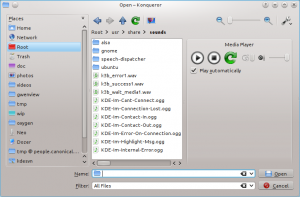
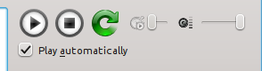
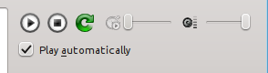
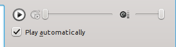
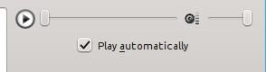
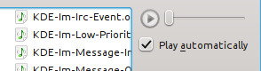
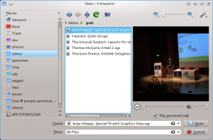

The other day I was setting up an audio reminder in KAlarm, and was going through /usr/share/sounds with the file dialog. I remembered the file dialog had a preview pane, accessible via "(wrench icon) > Show Aside Preview". Sure enough the file dialog can preview sound files, but the preview pane looked like that:
I decided that pane could use a bit of UI cleanup: the space is so cramped the seek slider is invisible. I sat in front of my computer one evening to see what I could do about it (click the cropped screenshots for full window versions).
First step: remove the group box: it wastes space and I assume everybody will be able to recognize what this interface is for:
Next: use the same button sizes as other parts of the dialog:
The seek slider is a bit more usable now, but it's still quite narrow. Do we need all these buttons? Let's be bold and remove the "stop" and "toggle looping" button (yes, it's a "toggle looping" button, using the "reload" icon for lack of a better one).
That's better, but there is still an icon to the left of the seek slider which is wasting space. Fortunately that icon, which is provided by the Phonon::SeekSlider widget, is easy to remove: one call to setIconVisible(false) and a few layout adjustments later and we got this.
This is nicer (at least according to me), but it still takes quite some horizontal space, which could be used to show more files in the list on the left.
I could drop the volume slider, but I already dropped the "stop" and "toggle looping" buttons, I don't want all the KDE lolcats to start running after me shouting: "stop dropin' featurz, u iz turning kde into ze gnome!" (yes, I suck at lolcats).
Let's do something a bit more clever: the volume slider is less important than the seek slider, so we can just hide it if there isn't enough room. Now if we drag the splitter pane to shrink it, the volume slider goes away, leaving us with this:
That's it, I hope you prefer this version to the previous one. It looks quite nice with video preview as well:
The code is in trunk and will be in KDE SC 4.6.
{kind=link}
{kind=link}
{kind=link}
{kind=link}
{kind=link}
{kind=link}
{kind=link}